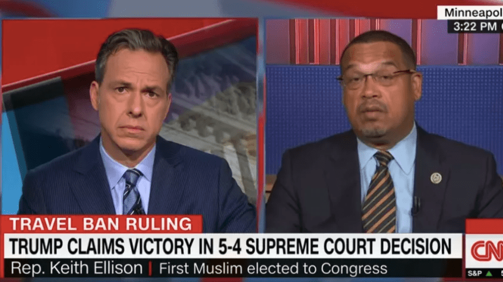
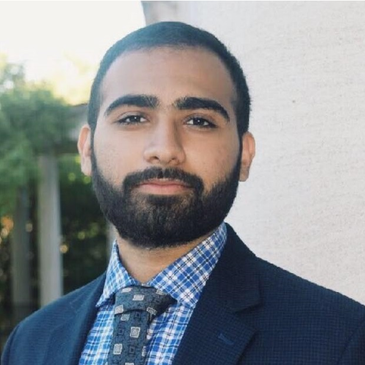
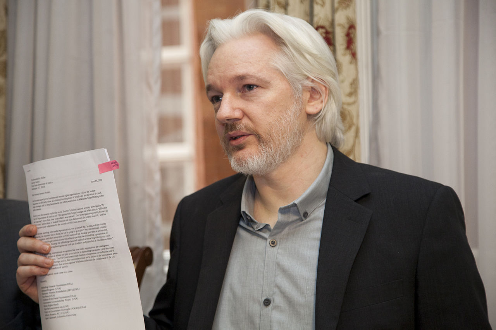
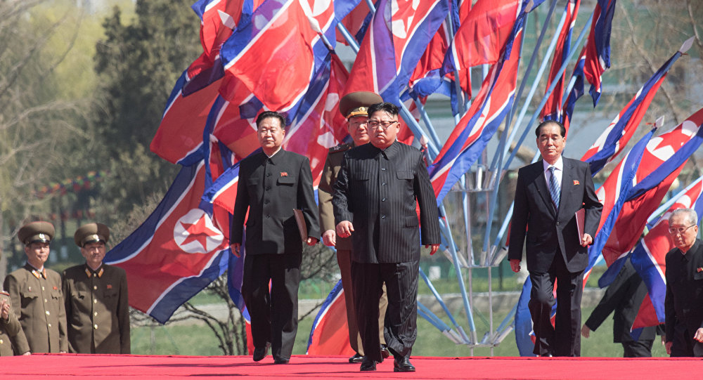
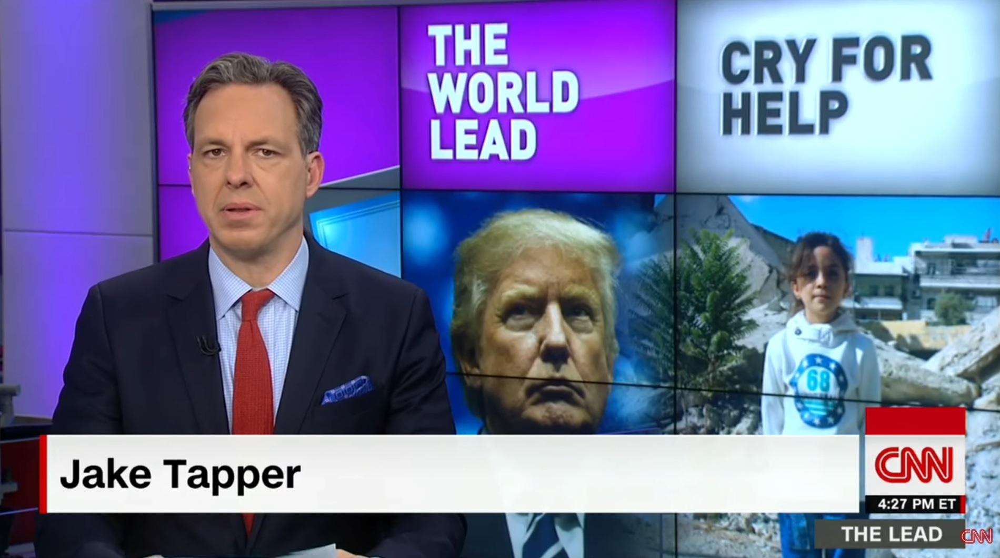
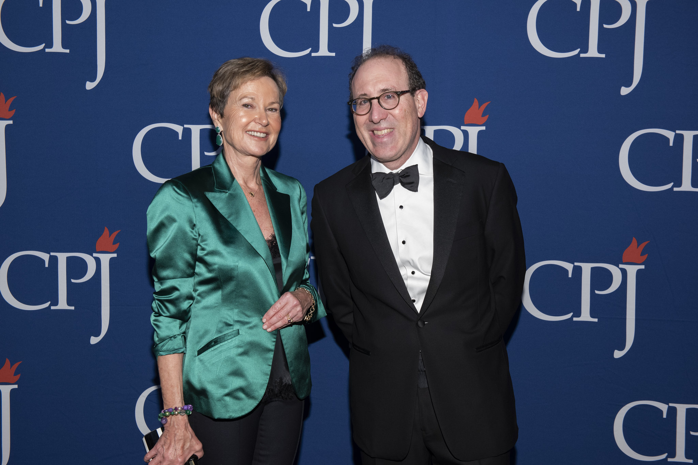
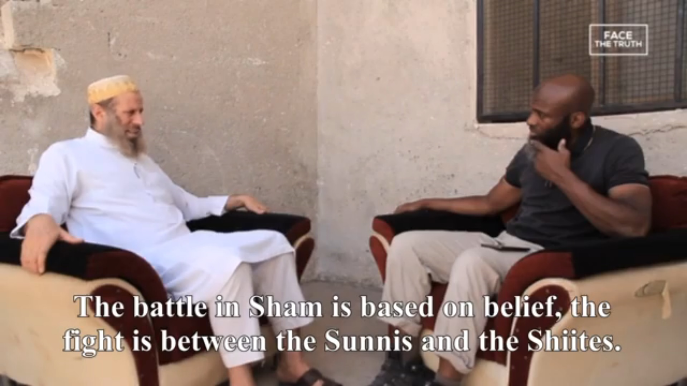

From Reagan to Rahm: A long list of public figures Jake Tapper must condemn for ties to Farrakhan

The Supreme Court of the United States on June 26 upheld President Donald Trump’s executive order supporting a ban on immigration from many Muslim-majority countries, especially those in the crosshairs of American foreign policy.The five Republican judges decided that it did not matter that Trump had been touting plans for a Muslim ban for over three years, and essentially ruled that their own right-wing ideology superseded reason and the rule of law.
Comparisons to notorious SCOTUS decisions allowing for the internment of Japanese Americans and the perpetuation of slavery were abound in discussions of the ban.
In the midst of the fallout from the ruling, prime time CNN personality Jake Tapper hosted Rep.Keith Ellison, one of only two American Muslims in Congress, for what on the surface seemed like a chance to respond to the court.Tapper then spent a grand total of 65 seconds talking to Ellison about the Muslim ban before revealing his true priorities.
As soon as Ellison mentioned Donald Trump’s 'bigotry,' Tapper immediately changed the subject to demand that Ellison condemn Louis Farrakhan, though he has already publicly addressed the issue.Ellison helped organize Farrakhan’s Million Man March in 1995, an event that was also attended by former President Barack Obama and hundreds of thousands of Black men with a wide array of political views.Today, Ellison is a Sunni Muslim with absolutely no ties to the Nation of Islam.Ellison explained this point ad nauseam for nearly four minutes before Tapper abruptly terminated the interview.
The interview revealed how little Tapper cared about the massive blow to civil liberties and his lack of concern for another escalation in the war on immigrants.Though he markets himself as one of Trump’s toughest foes in the media, Tapper seemed to have little interest in defending the values of the Constitution as they pertain to religious freedom.Instead, he seemed fixated on undermining those American Muslims who have dared to assert themselves in politics by using one of the cheapest and most well-worn tactics in the book.
Tapper’s obsession with attacking American Muslim political activists can also be witnessed in his rabid online attacks on the Women’s March co-chair Linda Sarsour, a Palestinian-American Muslim who Tapper has repeatedly hounded, and his fervent criticism of another Women’s March Chair, Tamika Mallory, whom he slammed for attending a Farrakhan speech.(Tapper’s attacks have been eagerly promoted by far-right media.)
There is no question that Farrakhan has spouted off a stream of slurs against women, homosexuals, and American Jews.He has praised Donald Trump for saying that Trump is 'the only man that stood in front of the Jewish community and told them, ‘I don’t want your money.’'Earlier in his career, Farrakhan even called Malcolm X a traitor and declared that, 'such a man deserved to die.'
Farrakhan’s views will receive no defense from this writer, but it must also be acknowledged that he is a political force to be reckoned with, especially in areas like Chicago, where he commands a vast constituency and is a gatekeeper in many ways for local politicos seeking to reach economically destroyed areas where the minister has far more credibility that a government that has failed these places in a way that is almost criminal.
Oddly, Tapper has only criticized Muslims and left-leaning Black activists who have associated with Farrakhan, while letting the countless other politicians and celebrities who have held court with him off the hook.It is time for Tapper and his corporate media colleagues to demonstrate some consistency for a change.They must hunt down the following major political and cultural figures and demand that they too condemn Farrakhan.And if they can’t get Ronald Reagan on the red phone, maybe they can hold a seance.
1.Ronald Reagan and George H.W.Bush
The Nation of Islam’s Final Call newspaper reported that on January 4th, 1984, a Black American pilot named Robert Goodman was shot down while attempting to bomb Syria.Reverend Jesse Jackson and Minister Louis Farrakhan helped negotiate the release the pilot.As a result, President Ronald Reagan and Vice President, George HW Bush met with Louis Farrakhan and Jesse Jackson in order to thank them for helping bring this soldier home.Tapper has actually quoted Ronald Reagan as a means of rebuking Donald Trump’s foreign policy.To demonstrate consistency, Tapper should publicly slam Reagan and organize an on-air interrogation of George HW Bush, who is still clinging to life and has yet to distance himself from his meeting with Farrakhan that took place on the White House lawn 34 years ago.
Barack Obama met Louis Farrakhan at a meeting of the Congressional Black Caucus in 2005.While he condemned Louis Farrakhan, it is critical to note that he only did it once when running for president.While Tapper did grill Obama in 2016 over his refusal to use the term, 'radical Islamic terrorism, (a phrase loaded with Islamophobic undertones), Tapper refused on multiple occasions to ask Obama to condemn Farrakhan, as he did with Congressman Keith Ellison.
3.Hillary Clinton; Bill Clinton; Former Secretary of State, Condoleezza Rice; Former Congressman Artur Davis; Former Governor of Alabama, Robert Riley; Former Mayor of Montgomery, Bobby Bright
Hillary Clinton spoke at the funeral of Civil Rights activist, Rosa Parks, a service at which Louis Farrakhan also spoke.Here the Minister Farrakhan can be seen pictured alongside Clinton.Also present at the service were former President of the United States, Bill Clinton; Secretary of State, Condoleezza Rice, US Congressman Artur Davis, then-Governor of Alabama, Robert Riley, and then Mayor of Montgomery, Bobby Bright.Strangely, Jake Tapper has not asked any of these politicians to condemn Louis Farrakhan.
Former Secretary of State, Colin Powell, met with Louis Farrakhan at the 50th anniversary of the independence of Jamaica.Tapper has yet to ask Colin Powell to also condemn the Minister, but perhaps if the former Secretary of State suddenly converts to Islam and takes on anti-war views, Tapper will get on the case.
5.Rosa Parks
In addition to having Louis Farrakhan speak at her funeral, Rosa Parks was also a speaker at the Million Man March.If it is a crime for Keith Ellison, it is a crime too for Rosa Parks, one of the most revered civil rights activists of all time.Tapper must pay a visit to Parks’ grave and give her a stern tongue lashing and a condescending wag of the finger.
6.Don Lemon
Jake Tapper’s CNN colleague, Don Lemon also has a relationship with Louis Farrakhan.In fact, the Nation of Islam’s website actually sells an interview between Don Lemon and Louis Farrakhan, which is advertised as Lemon asking Farrakhan about 'a variety of spiritual, economic and political issues.
After wearing a bow tie, fellow CNN personality Marc Lamont Hill joked that Don Lemon 'looks like a member of the Nation of Islam,' in the words of Lemon.Lemon replied that 'That’s okay.I like them…I buy The Final Call [The Nation of Islam’s Official newspaper]…The Final Call today, the one that they were selling was about torture in America in American prisons.I buy it every time I see them.'
In order to be morally consistent, Tapper should condemn his colleague, Don Lemon, for meeting with Farrakhan, stating that he likes his followers, and for his frequent reading of the Final Call.
7.Marc Lamont Hill
This Facebook post is no longer available.It may have been removed or the privacy settings of the post may have changed.
Tapper’s other CNN colleague has also met with Louis Farrakhan numerous times and told him 'about the influence of The Honorable Elijah Muhammad on my formation and consciousness to this day.'While Hill said he disagrees with Farrakhan on many issues, so too do Keith Ellison and Tamika Mallory.In order to be morally consistent, Tapper should condemn and disassociate himself with Marc Lamont Hill.In fact, it may even be wise for him to also condemn himself considering how many of his coworkers have met with Louis Farrakhan.Or better yet, Tapper could simply quit and spare himself the agony of having to associate with so many of the minister’s associates.
8.Edward Rendell, former mayor of Philadelphia and former Governor of Pennsylvania
Mayor Ed Rendell, who is Jewish, shared a platform with Farrakhan at a church, where the two discussed the fight against crime in the city.Jewish organizations declined to attend when they realized that Rendell would be sharing a platform with the notorious Nation of Islam leader.In his speech, Rendell applauded Farrakhan’s organization for its 'emphasis on family values and self-sufficiency.'Once again, Tapper must demonstrate his moral consistency and denounce Ed Rendell, who has yet to apologize for sharing a stage with Farrakhan.
9.Nelson Mandela
In 1996, Louis Farrakhan met with South African president, Nelson Mandela at his home in Johannesburg.Farrakhan stated that 'Mandela deserves more than a handshake' as the two spoke of the unity of their messages.Jake, it’s time to put your moral standing on the line against Mandela.The international community is waiting for your condemnation with bated breath.
10.Ras Baraka
The Mayor of Newark, Ras Baraka, introduced Louis Farrakhan at a fundraiser in Newark in 2014, while he was Deputy Mayor of Newark.He stated that it was a 'glorious day' when Louis Farrakhan arrived and referred to Louis Farrakhan as a 'role model' who had 'helped him to become a man.'He stated that no man today compares to the 'moral authority' of Louis Farrakhan, and that he is 'the leader of every Black person on this planet.'Honestly, this one probably shouldn’t be hard for Jake, as Ras Baraka is a relatively progressive mayor and a longtime political foe of the corporate centrist Cory Booker, who is clearly more in line with Jake’s views.
11.Eminem
Louis Farrakhan had a 2.5 hour meal with rapper, Eminem, where he advised the rapper on how to be a positive influence in the recording industry.Why hasn’t Tapper interrogated Eminem yet on this scandalous meeting, opting instead to tweet Eminem’s song 'Bagpipes from Baghdad' with the caption, 'I assume everyone knows @Eminem did a song with bagpipes.'
i assume everyone knows @Eminem did a song with bagpipes.https://t.co/65JDD8TgQu — Jake Tapper (@jaketapper) September 18, 2014
12.Kanye West and Kim Kardashian
Kanye West and Kim Kardashian brought their daughter North along to meet Louis Farrakhan in his Chicago home.West has previously used his music as a means of praising Farrakhan.In his song, 'Heard Em Say,' Farrakhan states that 'We pray like the Minister say.Allahu Akbar and throw em some hot cars.'In his song, 'Highlights,' he also says that 'I’m about that Farrakhan.'Despite leading numerous discussions on Kanye West, Tapper has refused to condemn him for his support for Louis Farrakhan
13.Rick Ross
Rapper Rick Ross met with Louis Farrakhan and commented afterwards that he received, 'Wise words from a Great mind.Minister Farrakhan blessed me w/ peaceful words today.'We know that Jake is a huge fan of rap music, despite his penchant for serving Black political scofflaws with condescending lectures.Why has he let Rick Ross of the hook so far?
14.Vic Mensa
Chicago rapper Vic Mensa called his meeting with Louis Farrakhan 'really dope' and said that Farrakhan 'lights up the room.'Mensa spoke of how Farrakhan explained to him how the younger generation has potential for looking past differences, and how to use positive influences in his music.Mensa has been very politically active, even performing at the March for Our Lives.Jake has used the supposed Farrakhan connection to tar the Women’s March; why not go after the preferred entertainment for the Parkland kids as well?
15.Rahm Emanuel
The Mayor of Chicago, Rahm Emanuel, has praised Minister Louis Farrakhan for 'helping' in the fight against crime in Chicago.Emanuel, who is Jewish, joins the mayor of Philadelphia in his close association with Farrakhan.When Tapper had a chance to interview Rahm, he chose to focus on mundane matters like Afghanistan, the economy, and energy policy.Why no four minute badgering about Rahm’s ties to Farrakhan?
If Jake Tapper can not bring himself to interrogate every single major cultural and political figure who has associated with Farrakhan, he should at least recognize that while not everyone who holds court with the minister endorse all of his extremely problematic views, they do recognize that the Nation of Islam has a substantial presence in many inner-city communities.Keith Ellison did not work on the Million March because he hates gay people.Tamika Mallory did not attend Nation of Islam events because she hates Jewish people.They may have worked on initiatives with Farrakhan for the same reason that public figures from Reagan to Rahm to Rendell have — because they recognize that he can connect them to droves of Black Americas they would otherwise not be able to engage.
In these economically devastated communities, Farrakhan has developed a reach that few, if any, government official enjoys.And with his condescending, elitist attitude, Tapper seems content to keep it that way.
Posted On: 2018-06-28T00:00:00
Posted By: Kevin Gosztola






Content Date: 2018-06-28
Download Date: 2021-05-07
Document ID: L0C04AVLT